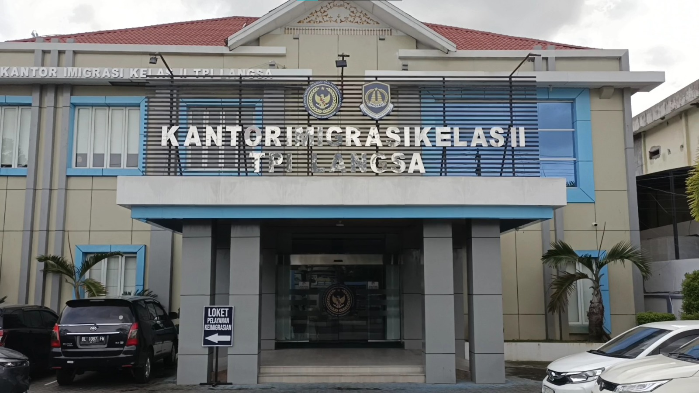

KANTOR IMIGRASI KELAS II TPI LANGSA
Kerja Praktik

Menjalani kerja praktik di lingkungan pelayanan publik Kantor Imigrasi Kelas II TPI Langsa. Pengalaman ini memperluas pemahaman saya mengenai administrasi, koordinasi kerja, disiplin dokumen, serta pentingnya pelayanan yang responsif.
- Beradaptasi dengan alur kerja profesional.
- Mendukung kegiatan administrasi dan dokumentasi.
- Mengembangkan komunikasi serta ketelitian kerja.